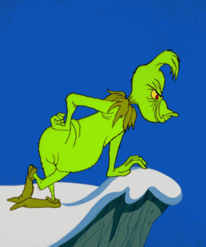

rules
1. Je moet 2 keer om het bord om het spel te kunnen winnen en de kerstboom moet opgebouwd woorden uit 8 stukken
2. Alle vakken staan voor opdrachten behalve de lege tegels
3. Je moet de vragen/opdrachten doen om door te kunnen
4. Je speelt met een dobbel steen om te bepalen hoe ver je mag
5. Als je de opdracht/vraag fout krijgt mag je niet volgende ronde dobbelen
6. Zand/sneeuwloper bepaalt tijd bij tegels als je verliest zie regel 5
7. Als je op grinch tegel land pak een grinch kaart
8. Je kan alle kanten op
9. Je moet de kant met de klok mee gaan.
10. Je kan alleen via de grote vakken naar de kerstboom gaan
11. Je kan alleen pas door de rooie poort gaan als je alle stukken hebt